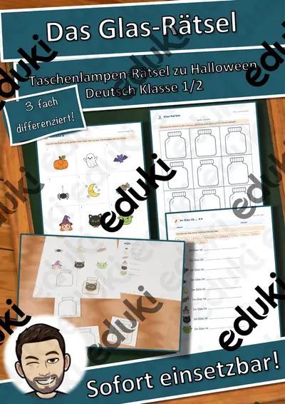
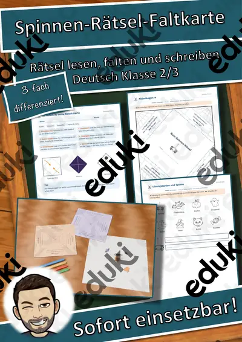

Halloween - Hörverstehen
KostenlosMaterial auf eduki ansehen
Mit diesem Material erhalten Sie ein Arbeitsblatt zum Hörverstehen über das Thema:
Halloween
Die Schülerinnen und Schüler scannen den QR-Code und hören sich den gesprochenen Text aufmerksam an. Anschließend beantworten sie die Fragen auf dem Arbeitsblatt.
Ich wünsche Ihnen und Ihren Schülerinnen und Schülern viel Freude mit dem Material!
FachDeutsch
KlasseKl. 6–7
SchulformSek I Mittlere Schulform
MaterialartStundenentwürfe, Unterrichtsreihen, Arbeitsblätter, Stationenlernen
Ähnliche Materialien

Halloween – Hörverstehen mit Lückentext (interaktiv)

Halloween Lückentext mit Wortspeicher Hörverstehen und Suchsel

Pixelbilder Halloween (Kunst, Vertretung, Konzentrationsübung)

Halloween Taschenlampen-Rätsel „Was steckt im Glas?“ – Sätze mit ein/eine schreiben, 3-fach differenziert (Klasse 1/2)

Spinnen-Rätsel-Faltkarte – Halloween-Rätsel lesen und schreiben, Pop-up-Spinne, 3-fach differenziert (Klasse 2/3)

Halloween-Ziehkarten – Präpositionen sichtbar machen: über, vor, neben, auf, 3-fach differenziert (Klasse 1/2, DaZ)

Halloween-Hüpffiguren – 6 Bastelvorlagen mit Federkugel, Steckbrief und Geschichte, 3-fach differenziert (Klasse 1/2)